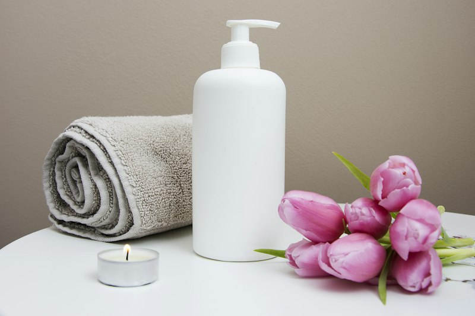

Excelência & Detalhes
Harmonia entre Corpo, Mente e Energia
Agulhas siliconadas ultrafinas descartáveis em pontos de meridianos para alívio duradouro.

Acupuntura Tradicional sem Dor
Aplicação precisa em pontos neurorreativos que estimulam a liberação de endorfinas naturais.
Material 100% Descartável e Esterilizado
Agulhas descartáveis de uso único com guia de aplicação suave para máximo conforto.
Ambiente Aromaterápico e Zen
Música suave, aromaterapia relaxante e iluminação terapêutica durante toda a sessão.

Ventosaterapia & Pedras Quentes
Desintoxicação miofascial e alívio profundo de nós musculares nas costas e pescoço.